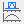

ミニツールバー：領域選択してズーム
Selection-Region-to-Zoom
カーソルがポインタモード のとき、グラフレイヤ内の矩形領域（赤枠）を選択するとミニツールバーが表示され、スケールインと別グラフで拡大ツールが使えます。
のとき、グラフレイヤ内の矩形領域（赤枠）を選択するとミニツールバーが表示され、スケールインと別グラフで拡大ツールが使えます。
スケールイン
- ミニツールバーでスケールインボタン
 を選択することで、グラフレイヤが選択された領域に位置調整されます。
を選択することで、グラフレイヤが選択された領域に位置調整されます。
- 元のスケールに戻す場合には、メニューから編集：元に戻す：ズームイン/アウトを選択するもしくはCtrl+Zを入力することで先ほどの操作を取り消すことができます。
- 複数のレイヤのあるグラフでは、レイヤにスケールを適用すると、他のレイヤでもこの操作が適用されます。

別グラフで拡大
- ミニツールバーにある別グラフで拡大ボタンを選択すると、選択領域から作成したEnlargedという名前の新しいグラフが追加されます。
- 矩形領域をドラッグアンドドロップすると、新しいグラフウィンドウのスケールが自動更新されます。
- 元のグラフから矩形領域を削除すると新しいグラフウィンドウも削除されます。

- 矩形領域を右クリックして複製を選択します。複製された矩形を関心領域に移動します。